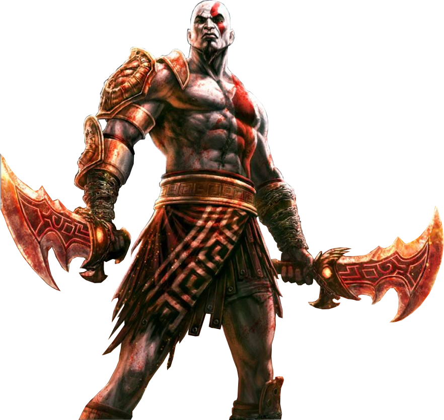

Origen y Tragedia
Kratos, conocido como el Fantasma de Esparta, es un semidiós hijo de Zeus y la mortal Calisto. Su historia está marcada por la tragedia desde sus inicios como general espartano. Engañado por el dios Ares, Kratos asesinó a su propia esposa e hija en un templo dedicado a Atenea, un acto que lo dejó atormentado por pesadillas constantes y lo llevó a jurar lealtad a los dioses del Olimpo.
Tras servir a los dioses durante diez años con la promesa de que liberarían sus pesadillas, Kratos descubrió que estos no tenían intención de cumplir su palabra. Esto desencadenó su ira y determinación de vengarse, llevándolo a enfrentar y derrotar a Ares, tomando su lugar como el nuevo Dios de la Guerra. Sin embargo, este nuevo poder no le trajo la paz que tanto anhelaba.
Nueva Vida en los Reinos Nórdicos
Después de destruir el Olimpo griego y causar el caos en su mundo natal, Kratos viajó a los reinos nórdicos donde comenzó una nueva vida. Allí conoció a la gigante Laufey (Faye), con quien formó una familia y tuvo un hijo llamado Atreus. Tras la muerte de Faye, Kratos y Atreus emprenden un viaje para esparcir sus cenizas en el pico más alto de los nueve reinos.
Este viaje transformador los lleva a enfrentarse a los dioses nórdicos, incluyendo a Baldur, Thor, y finalmente al propio Odín. A lo largo de esta nueva saga, Kratos debe aprender a controlar su ira, enfrentar los fantasmas de su pasado y convertirse en un mejor padre para Atreus, mientras lidia con las consecuencias de sus acciones anteriores y busca redimirse de sus pecados.

Kratos con sus icónicas Espadas del Caos Kratos adulto
Kratos adulto